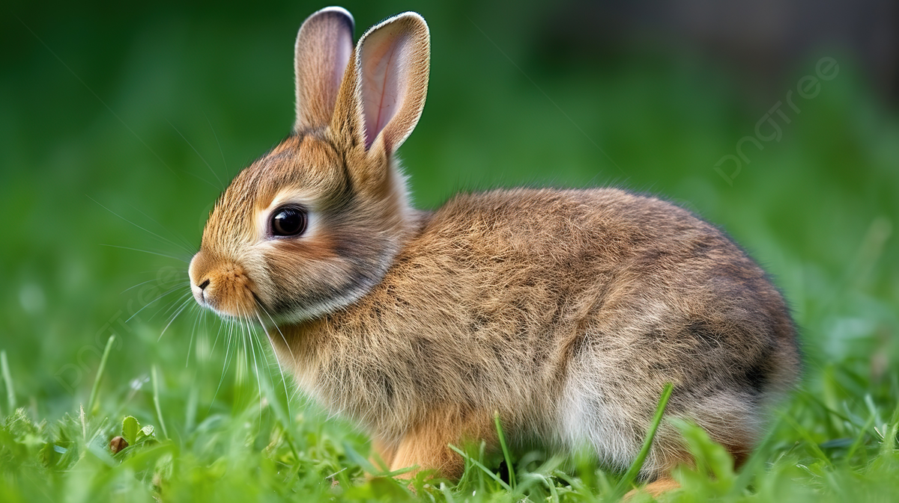

Conóceme
Nesquick
En Patitas felices, cada rescate es una historia de esperanza. Y la de Nesquik nos recuerda por qué hacemos lo que hacemos. Nesquik era un pequeño conejo de pelaje marrón y ojos brillantes. Durante meses, vivió en una jaula olvidada en un rincón frío, sin cariño ni compañía. Su mundo era pequeño, pero su corazón nunca dejó de soñar con la libertad. Un día, Nesquik fue abandonado en un parque, sin saber cómo sobrevivir solo. El miedo y el hambre lo acompañaban, hasta que una persona amable lo encontró y decidió traerlo a nuestro refugio. Aquí, recibió cuidados, alimento y, por primera vez en mucho tiempo, caricias llenas de amor. Ahora Nesquik está esperando a esa familia especial que se enamore de él y le de una nueva vida llevándolo a un hogar lleno de amor y ternura. Con el tiempo, Nesquik recuperó su energía y su confianza.